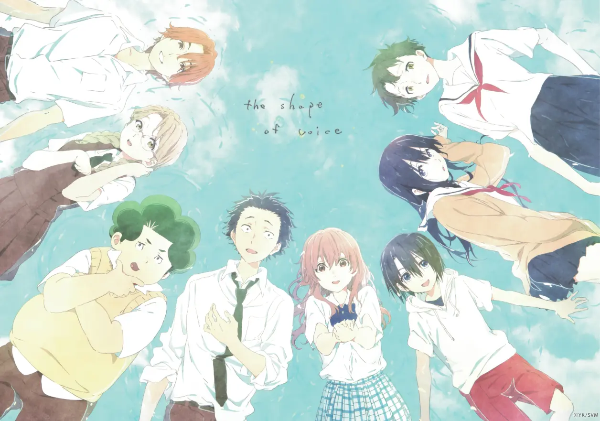
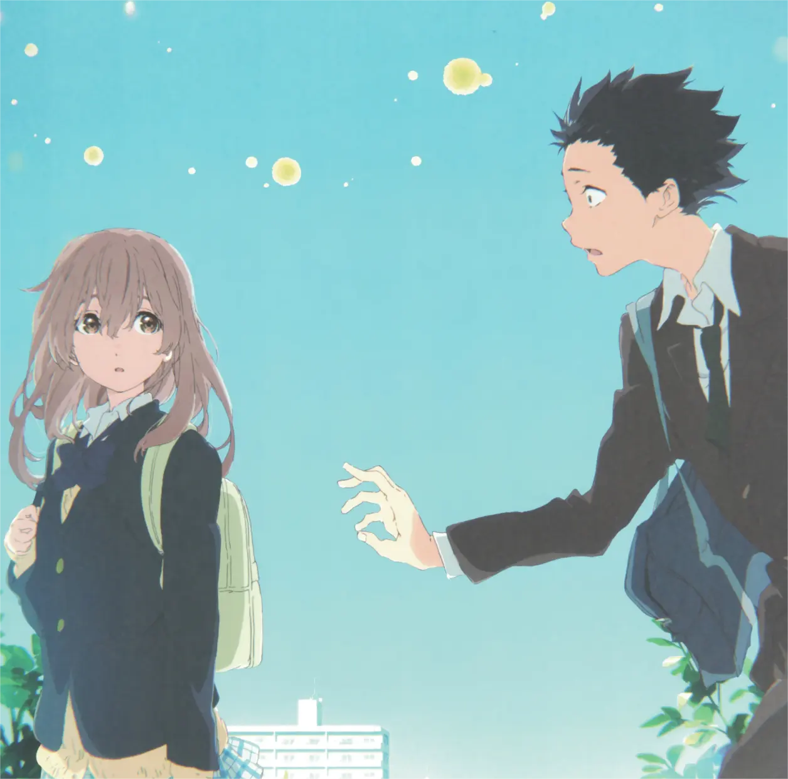

硝子的内心。
她始终认为，自己在给大家添麻烦。
用硝子自己的话说：“我活着就只会给身边人带来灾祸”。
硝子一直认为自己的做法是对的，
硝子一直认为自己是个灾星，
硝子一直在努力去接近大家，
但一直失败。
硝子一直活在自己的世界里。
从出生，到小学六年级与将也的相遇，到将也受伤之前。
硝子一点都没有变。
因为她听不见。
她永远无法第一时间感受到别人的声音，
把别人的声音和表情对应起来。
她永远无法获得及时消息，只能依靠自己的猜测和判断。
她怎么知道这样做对不对？
但将也的一跳，惊醒了她。
自此之后，硝子开始改变自己。
每个人都有着不为人知的过去，每个人也都有着自己的铠甲。
硝子的自我封闭，将也的捂住双耳，植野的大大咧咧，佐原的独自隐藏，川井的假装委屈，真柴的暴力侵向，永束的八个虚假朋友，以及结弦的相机与逃学。
但上天就是如此的巧合，让这八个人凑到了一起。
于是在各种各样的因缘际会下，奇迹发生了。
硝子打开了心门，主动去寻找八个人解决矛盾，将也重新认识自己和硝子，找到了自己的未来，植野正视了自己的感情，获得了将也的原谅，佐原拾起自信，站上T台，川井学会了换位思考，真柴学会了正面面对，永束找到了真正的朋友，结弦也回到了学校，重新开始了简单的人生。
他们都勇敢的直视了自己的过去。
作者大今良时曾经在漫画中说，自己希望去描述”欺凌者和被欺凌者的心路历程“。
那么在这八位欺凌者和被欺凌者的心路历程中，我们获得了什么？
我们获得了面对过去自己的勇气。
《声之形》是写给被自己黑暗的过去一直影响的那些人，或者帮助在那个时期迷茫不已的青少年走出困境。
就是这样。
生活再糟糕，自己的过去再不堪回首，也终究是自己。
当能够坦然对自己的糟糕过去付之一笑的时候，就再没有什么东西能够阻止前行了。
